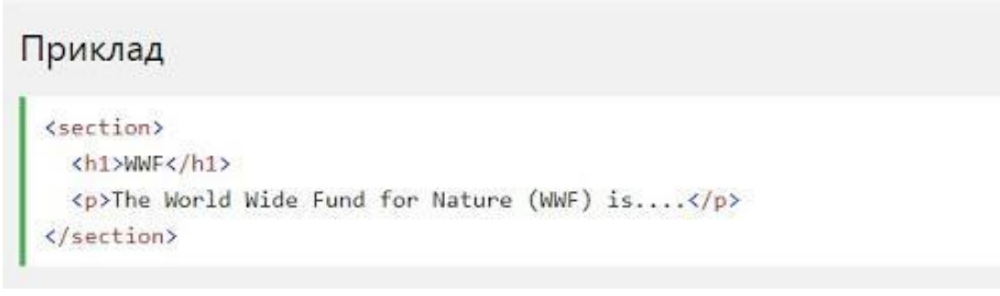
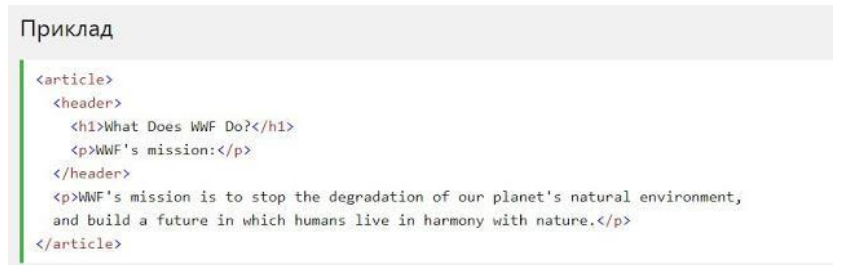
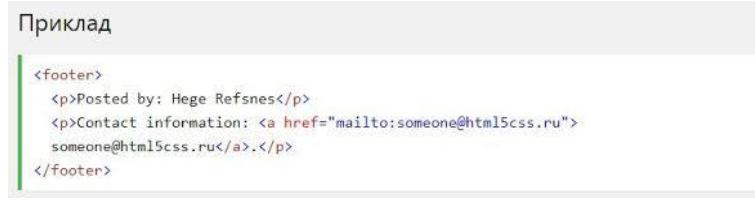

Семантичний елемент чітко описує його значення як для браузера, так й для розробника.
Приклади не семантичних елементів: /div/ й /span/ - нічого не говорить про його вміст.
Приклади семантичних елементів: /form/, /table/ і /article/- чітко визначає його зміст.
Семантичні елементи HTML5 підтримуються у всіх сучасних браузерах.
Крім того, ви можете "навчити" старих браузерів, як обробляти "невідомі елементи".
Прочитайте про це в Прочитайте про це в
HTML5 пропонує нові семантичні елементи для визначення різних частин веб-сторінки:
Елемент /section/ визначає розділ в документі.
Згідно з документацією в3к'с HTML5: "розділ представляє собою тематичну угруповання контенту, зазвичай з заголовком".
Домашня сторінка зазвичай може бути розділена на розділи для ознайомлення, змісту і контактної інформації.
Елемент /article/ визначає незалежний, автономний вміст
Стаття повинна мати сенс самостійно, і вона повинна мати можливість читати його незалежно від іншої частини веб-сайту
Приклади того, де можна використовувати елемент /article/:
Елемент /header/ задає заголовок для документа або розділу.
Елемент /header/ повинен використовуватися в якості контейнера для вступного змісту.
В одному документі може бути кілька елементів /header/.
У наступному прикладі визначається заголовок для статті:
Елемент /footer/ вказує нижній колонтитул для документа або розділу.
Нижній колонтитул зазвичай містить автора документа, інформацію про авторське право, посилання на умови використання, контактні дані і т.д.
В одному документі може бути кілька елементів /footer/.
